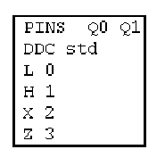
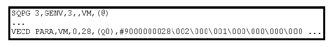

Vector Translation
In the second step, the vector translator converts the ASCII vector file into a binary vector file. This includes converting the state characters of the ASCII vector file into physical waveform DC/DC power units.
The ASCII timing file and the ASCII vector file are translated in two successive steps. Therefore the timing translator stores the mappings from state characters to physical waveform DC/DC power units for every combination of pin and ASCII device cycle in an intermediate file, the so-called timing map file.
For the wavetable displayed in Timing Translation, the timing map file section looks as follows:

Notice the following points in the figure:
- The first column contains the state characters that are defined for pins Q0, Q1 and the ASCII device cycle std in the ASCII timing file.
- The second column contains the DC/DC power units of the physical waveforms created from the action sequences of these state characters.
Using this file, the vector translator determines the target index for any state character in the ASCII vector file by the column to which the character belongs (identifying the pin), and by the ASCII device cycle specified in the row header. Thus, it translates the state character L for pin Q0 in the second ASCII vector of ASCII Vector File to the index 0.
The resulting physical waveform DC/DC power units are used as arguments for the vector download commands. These commands are pin specific, that is, their arguments are the waveform DC/DC power units that result from one column of the ASCII vector table. The download commands in their turn write the waveform DC/DC power units into the vector areas of the respective pins when the binary vector file is executed.
The vector translation also creates the download commands for the sequencer instructions that serve to send the signals to the DUT.
The following figure shows an excerpt of the binary vector file that the vector translator creates from the information in ASCII Vector File and the previous figure:

Notice the following points in the figure:
- The excerpt has been converted with the vis command (to be found in /opt/hp93000/soc/fw/TEST_TOOLS/bin) in order to make the binary data of the VECD command readable.
- The SQPG command downloads a GENV sequencer instruction which says "Send three vectors to the DUT."
- The VECD command can broadly be paraphrased as "Load the following 28 bytes into the vector area of pin Q0 at the address 0". 28 bytes is the smallest unit of the Vector Memory (VM memory type in Pin Scale compatibility mode) that can be accessed for load operations. Only the first 7 bytes of the binary data are displayed in the figure. The first 3 bytes contain the 3 waveform DC/DC power units for pins Q0. The other bytes contain no user data.
The vector translator also requires the pin configuration file. For example, it needs to know the port definitions for the generation of a multi-port setup, and the context of the pins for an NP setup.